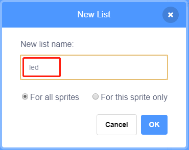

Nota
Ciao, benvenuto nella Community di appassionati di SunFounder Raspberry Pi & Arduino & ESP32 su Facebook! Approfondisci Raspberry Pi, Arduino ed ESP32 insieme ad altri appassionati.
Perché unirsi?
Supporto Esperto: Risolvi problemi post-vendita e sfide tecniche con l’aiuto della nostra community e del nostro team.
Impara e Condividi: Scambia suggerimenti e tutorial per migliorare le tue competenze.
Anteprime Esclusive: Ottieni accesso anticipato agli annunci di nuovi prodotti e alle anteprime.
Sconti Speciali: Approfitta di sconti esclusivi sui nostri prodotti più recenti.
Promozioni Festive e Giveaway: Partecipa a concorsi e promozioni durante le festività.
üëâ Pronto a esplorare e creare con noi? Clicca su [Qui] e unisciti oggi!
1.6 Lampada d’Acqua
Oggi utilizzeremo un LED Bar Graph, un Raspberry Pi e Scratch per realizzare una Lampada d’Acqua.
Il LED Bar Graph si illuminerà progressivamente seguendo la direzione delle frecce nella scena.

Componenti Necessari

Costruisci il Circuito

Carica il Codice e Guarda cosa Succede
Carica il file di codice (1.6_water_lamp.sb3) dal tuo computer a Scratch 3.
Cliccando su Arrow1, i LED del LED Bar si accendono uno alla volta in sequenza da sinistra verso destra e poi si spengono. Clicca su Arrow2 e i LED si accenderanno nell’ordine inverso.
Suggerimenti sugli Sprite
Elimina lo sprite predefinito e scegli lo sprite Arrow1.
Qui avremo bisogno di 2 sprite Arrow1, che si possono duplicare con il pulsante di duplicazione.

Clicca sullo sprite Arrow 2 e cambia la direzione della freccia selezionando il costume 2.

Ora creiamo una variabile.
Nominala num.

Segui lo stesso metodo per creare una lista chiamata led.
Dopo aver aggiunto, dovresti vedere la variabile num e la lista led nell’area della scena.
Clicca su + per aggiungere 10 elementi alla lista e inserisci i numeri dei pin in ordine (17,18,27,22,23,24,25,2,3,8).

Suggerimenti sui Codici

Questo è un blocco di evento che si attiva quando si clicca sullo sprite corrente.

Il valore iniziale della variabile num determina quale LED si accende per primo.

Imposta il pin corrispondente a num nella lista led su low per accendere il LED e quindi imposta il pin corrispondente a num-1 su high per spegnere il LED precedente.